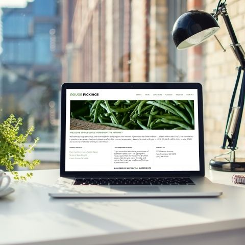
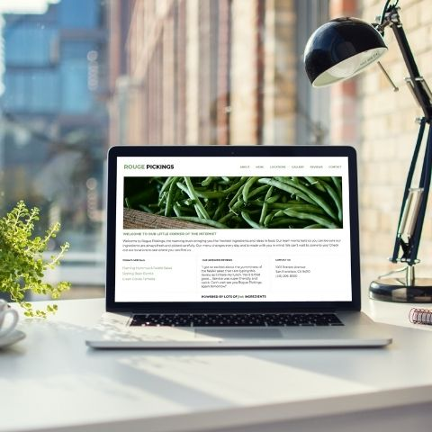

Behind the laptop
I'm a highly motivated developer who strives to create easy to read, clean effective code. I love to solve problems and create solutions to improve the world around me. I am results-driven, hands-on professional with a quantifiable track record of exceeding expectations. I have a strong desire to learn and tackle new challenges.
Away from my desk
My friends would describe me as ‘the organiser’ with a fun sense of humour. I enjoy nothing more than sunshine and lots of laughter. I immigrated to Australia with my family, from the UK, at age eight, and quickly adapted to the beach life. My hobbies mostly involve the sea, be it scuba diving, kiteboarding or sailing. I have always been happiest when on the go. When I learned how to build my first website, I realised I had found the industry that gave me the freedom & versatility I was looking for.
Skills: HTML | CSS | Responsive Web Design | Git and GitFlow
My Code

 
